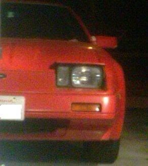
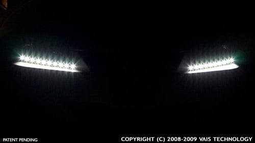

-
I put projectors in stock lights. No halogen. -
OH lol I thought you meant get stock housings, paint the inside black and put them back on. lol :lol:Sharpen047 wrote: I put projectors in stock lights. No halogen.
Me personally I like a little bit of "style" and contrast. Just being black doesnt look right IMO. You can maint your housing black, and leave the shroud chrome. There are endless possibilities.
Today I will be painting it black, but I want to try and get started on the lens cover. Hopefully it turns out good.My Build Thread -
I love satin black paint! I also painted the sides of the shroud to look more like a floating shroud.My Build Thread -
looking good!! interested in see how the acrylic comes out.86 NA
87 Turbo
Member of the "zetto sun-ichi" group
Local MN car forum/club anyone welcome..... fivezeroseven.net join! -
Re: 7x6 bixenon Projector Retrofit. **Prototype #2 on page
What did you use to hold the projector in place where you insert the bulb? A washer? plastic? metal?862sik wrote: Unit put together. I finally bought some low gloss paint instead of gloss, looks much better. These units had city lights, I took them out and routed the wiring for the high beam through them. I also like these housings because they have built in vents, saves me troubles later.
Now this will definitly fit in the z lol. -
Magic!
lol. I used a water that basically sandwiches the projector and the headlight together. It comes with the projector when you purchase it from the company.My Build Thread -
So when are direct replacement housings for the kouki going to be available?


1988 300zxt. gt35, stance, etc. Wheels: Varrstoen ES2 18x9.5 et-13 225/40. 18x10.5 et0 245/40
1990 jetta vr6'd -
As soon as I figure out this acrylic. I been playing with it and trying to get a perfect edge. I made a rectangular box to match the old headlight. Basically 1'' high, and the width of the headlight. I been doing so many alarm installs for friends that I havent had time to really work on it. I should have something by monday.DeleriousZ wrote: So when are direct replacement housings for the kouki going to be available?
As for replacment housings being avalible, I can always start them as long as I get a down payment for supplies…possibly a set of housings if you have them, if not I have to go to the yard and pull them myself.My Build Thread -
I assume this is the kouki shroud right? If you want to be fancy, you could fit a nice thin white led strip across the top of the shroud so when the lights are down people could flip the leds on (maybe wired to the foglight switch). I'd think it'd look cool.862sik wrote:
I love satin black paint! I also painted the sides of the shroud to look more like a floating shroud.
Probably something like this
 -
[quote]Ven wrote:Thanks for the suggestion. If the person who is buying it wants it....then I will do it. I personally don't like them, but these are not my lights hahOriginally posted by 862sikMy Build Thread -
[quote]862sik wrote: [quote=Ven]Something to keep in mind when I purchase mine LOL 8)Originally posted by 862sik -
That is a really good idea though. I could see perhaps modifying the headlight bucket or something to fit in some LED strips and have them wired to the foglights or use a custom switch to turn them on when the buckets are down. Maybe I'll talk to my buddy about making something to that effect. -
Yeah, anything is possible with electronics. I install alarms and stuff, and I can make anything happen =)RocklinMike300zx wrote: That is a really good idea though. I could see perhaps modifying the headlight bucket or something to fit in some LED strips and have them wired to the foglights or use a custom switch to turn them on when the buckets are down. Maybe I'll talk to my buddy about making something to that effect.My Build Thread -
Well I finally had time to put together these lenses and let them dry (after countless failed trials). I SHOUld of made them maybe a 1/8 higher to take up the gap in the top and bottom, but I dont think it will affect anything. I also decided to router the edges just a little bit to make it look better. I think it looks great. It mimics the factory glass. I will probably push the whole lens upwards so that there wont be much gap up top.
If I decide to, I may paint the inner side of this lens black to further cover everything. After im done ill flame polish the corners to get rid of that "white opaqe" look where the lens meets eachother.
Tell me what you guys think
My Build Thread -
Looks fantastic man! Will that fit between the bumper looks like it sticks our really far but i guess i havent looked at the factory headlights to see how large the glass part is.86 NA
87 Turbo
Member of the "zetto sun-ichi" group
Local MN car forum/club anyone welcome..... fivezeroseven.net join!

Copyright © 2006–. All rights reserved. Privacy Policy